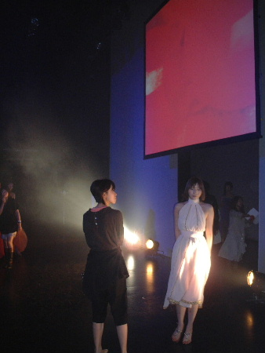
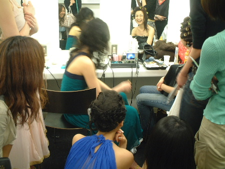
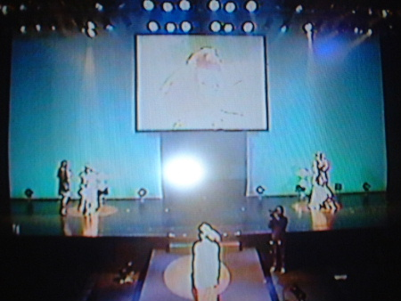
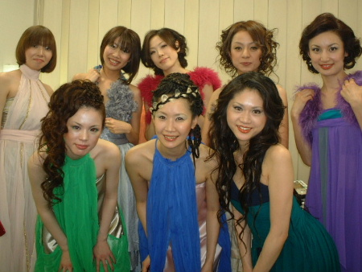
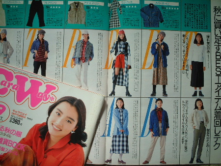
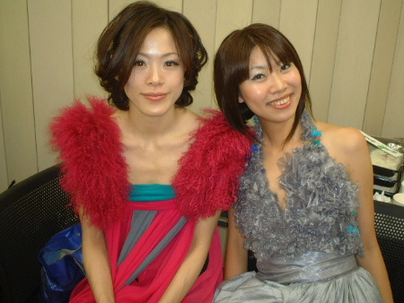

YOKOHAMA DESIGNERS
GALLERY ヘアショー

★
リハーサル★
会場はコンサートが行われることで有名な「横浜BRITZ」。
Ｔ字ステージの長いベロ導線は
２回も段差があり、これ
また急な階段！これまた真っ黒色調！（＞＜）
み、み、見えない・・・；；

★
モニターチェック★
たった３０分の場当たり！
たった１回のランスルー！
で、本番！！！
小さなモニターを囲み、リハーサル映像を何度も×２チェック中〜。
各々出番の「尺＆曲」
を告げられ、ステージ演出はモデル次第。
台本なんてあ
りません。
頭の中で演出しながら、頭の外はずっとヘアスタイリング。
ヘアショー現場では毎度のこと。

★
本番★
両サイドでは、限られた短時間でヘアカッティング。
私の担当者は指から血が・・・；；
こちらも毎度のこと。

★
モデル集合★
ヘアデザイナーさんのエレガントな力作たち〜〜〜
衣装もぜーんぶ手づくりなんですヨ。
ナント、私はここで、13年ぶ
り！！（＠＠）の
驚き嬉し再会をしました。
さぁて、誰とでしょう？

★
お宝モノ？★
ファッション雑誌『CaraWay』専属モデルしていた時の。
表紙は毎回芸能人が飾っていて、
坂井真紀さん、内田有
紀さん、持田真樹さん、、、一色紗枝さんなんてお顔が若
い〜
って、私もかーなーりー！！！（/-＼）
上段：当時私立校に通ってい
たので付けた芸名「保科真奈美」の私。
そして、下段が・・・↓

★
ユリア＆ユミ（マナミ？）★
鷲尾ゆりあちゃん♪
放課後、制服のまま現場に行っていた当時、
飛び抜けて最年少だった私をとても可愛
がってくれたし、私も一番慕っていまし
た。
撮影後、よく一緒に行ったジェラート屋さんとか、
私もスッカリ忘れていた事まで、たく
さん×２・・・懐かしすぎぃ〜
新しいこと大好きー♪
だから、新しいヘアスタイルにもチャレンジ旺盛♪
失敗なんて恐れません。
女性であることをもっと楽しまなきゃソン！
また新しい私の発見＆誕生でした★☆★